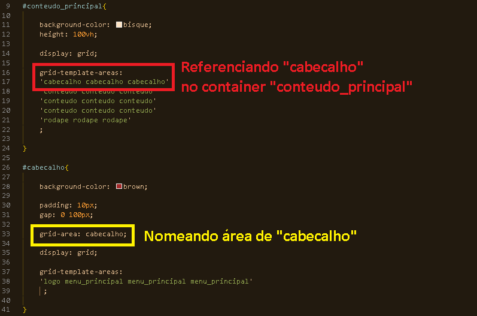

Conceitos Básicos do Grid
O CSS Grid organiza elementos filhos em linhas e colunas.
Quem organiza os filhos é o elemento pai, aplicando " display: grid ".
A primeira organização que definimos normalmente é colunas.
A quantidade e tamanho das linhas são menos controláveis diretamente, pois dependem do conteúdo e do tamanho do pai.
Propriedades Principais do Grid
grid-template-columns:
define a estrutura das colunas pelo pai (ex.: tamanho da 1ª coluna, da 2ª coluna, etc).
grid-template-rows:
define o tamanho das linhas.
As unidades de medida podem ser em %, px, vh ou a unidade especial fr (fração do espaço disponível do pai).
gap:
espaçamento entre linhas e colunas (semelhante ao gap do Flexbox).
Unidades e Tamanhos
fr representa uma fração do espaço disponível do container pai.
Exemplo: grid-template-columns: 1fr 3fr; → a segunda coluna ocupará três vezes o espaço da primeira.
Áreas do Grid (grid-area)
Podemos nomear áreas para os filhos usando grid-area e referenciar esses nomes para posicionamento.
O nome funciona como um "id" ou "etiqueta" para facilitar o posicionamento dos itens.

Exemplo de como nomear área e referenciar com grid
Controle de Alinhamento
A propriedade place-items (abreviação para align-items + justify-items) controla o alinhamento dos itens no grid:
Exemplo: place-items: end end; — alinha os itens no final no eixo vertical e horizontal.
Diferente do Flexbox, que usa justify-content para alinhamento principal.
Definir espaços com frações
Para colunas
grid-template-columns: 1fr 4fr;
O primeiro item ocupará 1 parte, o segundo 4 partes do espaço.
Para linhas
grid-template-rows: 100px 200px;
Define explicitamente o tamanho das linhas.
Seletores Básicos
p = tag.texto = class#id = id* = seleciona tudo
Seletores de Agrupamento
Exemplo:
h1, h2, p { ... }
Seletores Descendentes
Exemplo:
#Itens_menu li { ... }
Seleciona todos os <li> dentro de #Itens_menu.
Fontes e Tipografia
font-family
Define a família da fonte do texto (ex.: Arial, Verdana, Times New Roman). Fonte escolhida, familia da fonte e o tipo dela serifada ou não.
font-weight
Controla a espessura da fonte (ex.: normal, bold, valores numéricos como 100, 400, 700).
font-style
Define o estilo da fonte (ex.: normal, italic, oblique).
font-size
Determina o tamanho da fonte (ex.: px, em, rem, %).
text-align
Alinha o texto horizontalmente (ex.: left, right, center, justify).
text-transform
Controla a capitalização das letras (ex.: uppercase, lowercase, capitalize).
text-decoration
Adiciona ou remove efeitos como sublinhado, linha sobre o texto ou risco (ex.: underline, overline, line-through, none).
text-shadow
Aplica sombra ao texto (definindo deslocamento, desfoque e cor).
line-height
Define o espaçamento vertical entre as linhas de texto.
letter-spacing
Controla o espaçamento entre caracteres individuais.
word-spacing
Define o espaçamento entre palavras.
Importar Fontes do Google Fonts
-
1. Acessar o Google Fonts
Vá até fonts.google.com e escolha a fonte desejada.
2. Copiar o link de importação
No Google Fonts, clique em “Get embed code” e copie a tag @import.
-
3. Cole o @import direto no CSS
@import url('https://fonts.googleapis.com/css2?family=Roboto&display=swap');
-
4. Inserindo formatação
body {
font-family: 'Roboto', sans-serif;
}
Criando variáveis
-
Definir variáveis
Criamos dentro do seletor :root para serem globais.
Exemplo
:root {
--cor-principal: #3498db;
--tamanho-fonte: 16px;
}
Usar variáveis
Chamamos com a função var().
Exemplo
body {
color: var(--cor-principal);
font-size: var(--tamanho-fonte);
}
Alterar valor
Podemos redefinir em outro seletor.
Exemplo
h1 {
--cor-principal: red;
color: var(--cor-principal);
}
Cores no Texto
- Nome da cor (em inglês):
red
- Hexadecimal:
#RRGGBB
- RGB:
rgb(255, 0, 0)
- RGBA:
rgba(255, 0, 0, 0.5)
Bordas
border: espessura tipo cor;
border: 2px solid black;
Substitui: border-width, border-style, border-color
Interações: Hover e Cursor
button:hover {
background-color: blue;
cursor: pointer;
}
cursor: pointer
Ao passar o mouse sobre o botão, a cor de fundo ficará azul e o ponteiro se transformará em uma mãozinha.
Boas práticas com variáveis
- Crie variáveis no
:root
- Evite acentos e palavras reservadas
- Use nomes claros e consistentes, como
--cor-primaria